set.seed(124)
task = tsk("sonar")
learner = lrn("classif.rpart", predict_type = "prob")
measure = msr("classif.ce")Appendix A — Solutions to exercises
A.1 Solutions to Chapter 2
- Set the seed to
124then train a classification tree model withlrn("classif.rpart")and default hyperparameters on 80% of the data in the predefined"sonar"task. Evaluate the model’s performance with the classification error measure on the remaining data. Also think about why we need to set the seed in this example.
Set the seed, load the "sonar" task, then the classification tree with predict_type = "prob" (needed for exercise 3), and the required measure.
Use partition() to split the dataset then train the model. We set the seed because partition() introduces an element of randomness when splitting the data.
splits = partition(task, ratio = 0.8)
learner$train(task, splits$train)Once the model is trained, generate the predictions on the test set and score them.
prediction = learner$predict(task, splits$test)
prediction$score(measure)classif.ce
0.2195 - Calculate the true positive, false positive, true negative, and false negative rates of the predictions made by the model in exercise 1.
Using $confusion, generate a confusion matrix and extract the required statistics,
prediction$confusion truth
response M R
M 20 7
R 2 12Since the rows represent predictions (response) and the columns represent the ground truth values, the TP, FP, TN, and FN rates are as follows:
True Positive (TP) = 20
False Positive (FP) = 2
True Negative (TN) = 12
False Positive (FN) = 7
- Since in this case we want the model to predict the negative class more often, we will raise the threshold (note the
predict_typefor the learner must beprobfor this to work).
# raise threshold from 0.5 default to 0.6
prediction$set_threshold(0.6)
prediction$confusion truth
response M R
M 14 4
R 8 15One reason we might want the false positive rate to be lower than the false negative rate is if we felt it was worse for a positive prediction to be incorrect (meaning the true label was the negative label) than it was for a negative prediction to be incorrect (meaning the true label was the positive label).
A.2 Solutions to Chapter 3
- Apply the “bootstrap” resampling strategy on
tsk("mtcars")and evaluate the performance oflrn("classif.rpart"). Use 100 replicates and a sampling ratio of 80%. Calculate the MSE for each iteration and visualize the result. Finally, calculate the aggregated performance score.
set.seed(3)
task = tsk("mtcars")
learner = lrn("regr.rpart")
resampling = rsmp("bootstrap", repeats = 100, ratio = 0.8)
rr = resample(task, learner, resampling)
rr$score(msr("regr.mse")) task_id learner_id resampling_id iteration regr.mse
1: mtcars regr.rpart bootstrap 1 17.53
2: mtcars regr.rpart bootstrap 2 15.71
3: mtcars regr.rpart bootstrap 3 31.63
4: mtcars regr.rpart bootstrap 4 22.59
5: mtcars regr.rpart bootstrap 5 36.64
---
96: mtcars regr.rpart bootstrap 96 18.79
97: mtcars regr.rpart bootstrap 97 19.10
98: mtcars regr.rpart bootstrap 98 18.72
99: mtcars regr.rpart bootstrap 99 33.32
100: mtcars regr.rpart bootstrap 100 25.87
Hidden columns: task, learner, resampling, predictionautoplot(rr)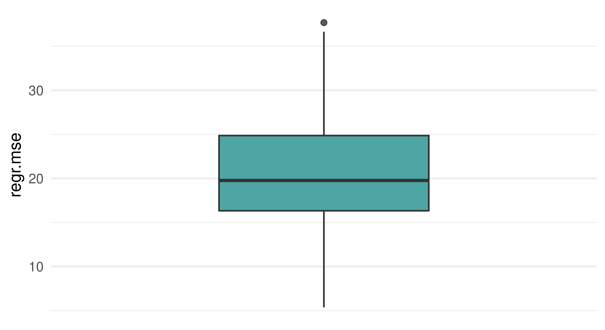
# Alternatively: Histogram
autoplot(rr, type = "histogram")`stat_bin()` using `bins = 30`. Pick better value with `binwidth`.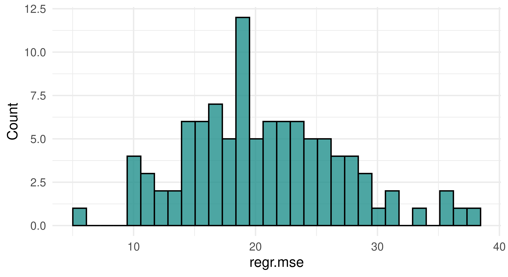
rr$aggregate(msr("regr.mse"))regr.mse
20.75 - Use
tsk("spam")and five-fold CV to benchmark Random forest (lrn("classif.ranger")), Logistic Regression (lrn("classif.log_reg")), and XGBoost (lrn("classif.xgboost")) with respect to AUC. Which learner appears to do best? How confident are you in your conclusion? How would you improve upon this?
set.seed(3)
design = benchmark_grid(
tasks = tsk("spam"),
learners = lrns(c("classif.ranger", "classif.log_reg", "classif.xgboost"),
predict_type = "prob"),
resamplings = rsmp("cv", folds = 5)
)
bmr = benchmark(design)
mlr3viz::autoplot(bmr, measure = msr("classif.auc"))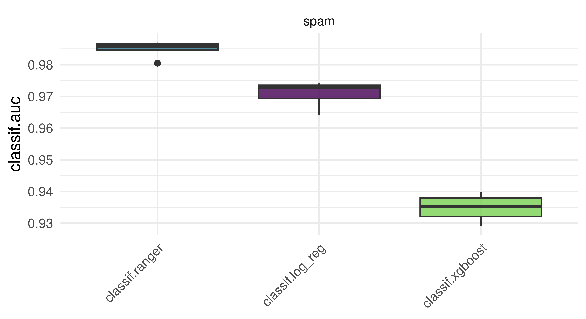
This is only a small example for a benchmark workflow, but without tuning (see Chapter 4), the results are naturally not suitable to make any broader statements about the superiority of either learner for this task.
- A colleague claims to have achieved a 93.1% classification accuracy using
lrn("classif.rpart")ontsk("penguins_simple"). You want to reproduce their results and ask them about their resampling strategy. They said they used a custom three-fold CV with folds assigned asfactor(task$row_ids %% 3). See if you can reproduce their results.
A.3 Solutions to Chapter 4
- Tune the
mtry,sample.fraction,num.treeshyperparameters of a random forest model (lrn("regr.ranger")) on the"mtcars"task. Use a simple random search with 50 evaluations and select a suitable batch size. Evaluate with a three-fold CV and the root mean squared error.
set.seed(4)
learner = lrn("regr.ranger",
mtry.ratio = to_tune(0, 1),
sample.fraction = to_tune(1e-1, 1),
num.trees = to_tune(1, 2000)
)
instance = ti(
task = tsk("mtcars"),
learner = learner,
resampling = rsmp("cv", folds = 3),
measures = msr("regr.rmse"),
terminator = trm("evals", n_evals = 50)
)
tuner = tnr("random_search", batch_size = 10)
tuner$optimize(instance) mtry.ratio sample.fraction num.trees learner_param_vals x_domain
1: 0.2764 0.9772 556 <list[4]> <list[3]>
1 variable not shown: [regr.rmse]- Evaluate the performance of the model created in Question 1 with nested resampling. Use a holdout validation for the inner resampling and a three-fold CV for the outer resampling. Print the unbiased performance estimate of the model.
set.seed(4)
learner = lrn("regr.ranger",
mtry.ratio = to_tune(0, 1),
sample.fraction = to_tune(1e-1, 1),
num.trees = to_tune(1, 2000)
)
at = auto_tuner(
tuner = tnr("random_search", batch_size = 10),
learner = learner,
resampling = rsmp("holdout"),
measure = msr("regr.rmse"),
terminator = trm("evals", n_evals = 50)
)
task = tsk("mtcars")
outer_resampling = rsmp("cv", folds = 3)
rr = resample(task, at, outer_resampling, store_models = TRUE)
rr$aggregate()regr.mse
8.322 - Tune and benchmark an XGBoost model against a logistic regression model on the
"spam"task and determine which has the best Brier score. Use mlr3tuningspaces and nested resampling.
Loading required package: mlr3tuninglrn_xgboost = lts(lrn("classif.xgboost", predict_type = "prob"))
at_xgboost = auto_tuner(
tuner = tnr("random_search", batch_size = 1),
learner = lrn_xgboost,
resampling = rsmp("cv", folds = 3),
measure = msr("classif.bbrier"),
term_evals = 2,
)
lrn_logreg = lrn("classif.log_reg", predict_type = "prob")
at_logreg = auto_tuner(
tuner = tnr("random_search", batch_size = 1),
learner = lrn_logreg,
resampling = rsmp("cv", folds = 3),
measure = msr("classif.bbrier"),
term_evals = 2,
)
task = tsk("spam")
outer_resampling = rsmp("cv", folds = 3)
design = benchmark_grid(
tasks = task,
learners = list(at_xgboost, at_logreg),
resamplings = outer_resampling
)
bmr = benchmark(design, store_models = TRUE)Warning: glm.fit: fitted probabilities numerically 0 or 1 occurred
Warning: glm.fit: fitted probabilities numerically 0 or 1 occurred
Warning: glm.fit: fitted probabilities numerically 0 or 1 occurred
Warning: glm.fit: fitted probabilities numerically 0 or 1 occurred
Warning: glm.fit: fitted probabilities numerically 0 or 1 occurred
Warning: glm.fit: fitted probabilities numerically 0 or 1 occurred
Warning: glm.fit: fitted probabilities numerically 0 or 1 occurred
Warning: glm.fit: fitted probabilities numerically 0 or 1 occurred
Warning: glm.fit: fitted probabilities numerically 0 or 1 occurred
Warning: glm.fit: fitted probabilities numerically 0 or 1 occurred
Warning: glm.fit: fitted probabilities numerically 0 or 1 occurred
Warning: glm.fit: fitted probabilities numerically 0 or 1 occurred
Warning: glm.fit: fitted probabilities numerically 0 or 1 occurred
Warning: glm.fit: fitted probabilities numerically 0 or 1 occurred
Warning: glm.fit: fitted probabilities numerically 0 or 1 occurred
Warning: glm.fit: fitted probabilities numerically 0 or 1 occurred
Warning: glm.fit: fitted probabilities numerically 0 or 1 occurred
Warning: glm.fit: fitted probabilities numerically 0 or 1 occurred
Warning: glm.fit: fitted probabilities numerically 0 or 1 occurred
Warning: glm.fit: fitted probabilities numerically 0 or 1 occurred
Warning: glm.fit: fitted probabilities numerically 0 or 1 occurredbmr<BenchmarkResult> of 6 rows with 2 resampling runs
nr task_id learner_id resampling_id iters warnings errors
1 spam classif.xgboost.tuned cv 3 0 0
2 spam classif.log_reg.tuned cv 3 0 0A.4 Solutions to Chapter 5
- We first construct the objective function and optimization instance:
library(bbotk)
library(mlr3mbo)
rastrigin = function(xdt) {
D = ncol(xdt)
y = 10 * D + rowSums(xdt^2 - (10 * cos(2 * pi * xdt)))
data.table(y = y)
}
objective = ObjectiveRFunDt$new(
fun = rastrigin,
domain = ps(x1 = p_dbl(lower = -5.12, upper = 5.12),
x2 = p_dbl(lower = -5.12, upper = 5.12)),
codomain = ps(y = p_dbl(tags = "minimize")),
id = "rastrigin2D")
instance = OptimInstanceSingleCrit$new(
objective = objective,
terminator = trm("evals", n_evals = 40))Based on the different surrogate models, we can construct two optimizers:
library(mlr3mbo)
surrogate_gp = srlrn(lrn("regr.km", covtype = "matern5_2",
optim.method = "BFGS", control = list(trace = FALSE)))
surrogate_rf = srlrn(lrn("regr.ranger", num.trees = 10L, keep.inbag = TRUE,
se.method = "jack"))
acq_function = acqf("cb", lambda = 1)
acq_optimizer = acqo(opt("nloptr", algorithm = "NLOPT_GN_ORIG_DIRECT"),
terminator = trm("stagnation", iters = 100, threshold = 1e-5))
optimizer_gp = opt("mbo",
loop_function = bayesopt_ego,
surrogate = surrogate_gp,
acq_function = acq_function,
acq_optimizer = acq_optimizer)
optimizer_rf = opt("mbo",
loop_function = bayesopt_ego,
surrogate = surrogate_rf,
acq_function = acq_function,
acq_optimizer = acq_optimizer)We then evaluate the given initial design on the instance and optimize it with the first BO algorithm using a Gaussian Process as surrogate model:
initial_design = data.table(
x1 = c(-3.95, 1.16, 3.72, -1.39, -0.11, 5.00, -2.67, 2.44),
x2 = c(1.18, -3.93, 3.74, -1.37, 5.02, -0.09, -2.65, 2.46))
instance$eval_batch(initial_design)
optimizer_gp$optimize(instance)
gp_data = instance$archive$data
gp_data[, y_min := cummin(y)]
gp_data[, nr_eval := seq_len(.N)]
gp_data[, surrogate := "Gaussian Process"]Afterwards, we clear the instance, evaluate the initial design again and optimize the instance with the second BO algorithm using a random forest as surrogate model:
We collect all data and visualize the anytime performance:
library(ggplot2)
library(viridisLite)
all_data = rbind(gp_data, rf_data)
ggplot(aes(x = nr_eval, y = y_min, colour = surrogate), data = all_data) +
geom_step() +
scale_colour_manual(values = viridis(2, end = 0.8)) +
labs(y = "Best Observed Function Value", x = "Number of Function Evaluations",
colour = "Surrogate Model") +
theme_minimal() +
theme(legend.position = "bottom")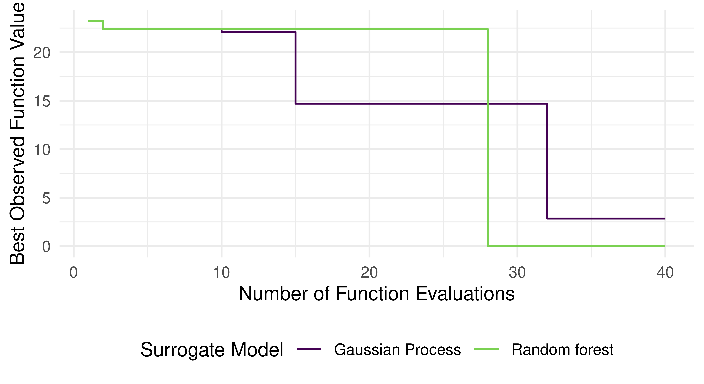
- We first construct the non-parallelized objective function and the optimization instance:
schaffer1 = function(xss) {
evaluations = lapply(xss, FUN = function(xs) {
Sys.sleep(5)
list(y1 = xs$x, y2 = (xs$x - 2)^2)
})
rbindlist(evaluations)
}
objective = ObjectiveRFunMany$new(
fun = schaffer1,
domain = ps(x = p_dbl(lower = -10, upper = 10)),
codomain = ps(y1 = p_dbl(tags = "minimize"), y2 = p_dbl(tags = "minimize")),
id = "schaffer1")
instance = OptimInstanceMultiCrit$new(
objective = objective,
terminator = trm("run_time", secs = 60))Using the surrogate, acquisition function and acquisition function optimizer that are provided, we can proceed to optimize the instance via ParEGO:
surrogate = srlrn(lrn("regr.ranger", num.trees = 10L, keep.inbag = TRUE,
se.method = "jack"))
acq_function = acqf("ei")
acq_optimizer = acqo(opt("random_search", batch_size = 100),
terminator = trm("evals", n_evals = 100))
optimizer = opt("mbo",
loop_function = bayesopt_parego,
surrogate = surrogate,
acq_function = acq_function,
acq_optimizer = acq_optimizer,
args = list(q = 4))optimizer$optimize(instance)We observe that 12 points were evaluated in total (which makes sense as the objective function evaluation is not yet parallelized and the overhead of each function evaluation is given by 5 seconds). While the points are appropriately evaluated in batches of size q = 4 (with the initial design automatically constructed as the first batch), we do not experience any acceleration of the optimization process unless the function evaluation is explicitly parallelized.
nrow(instance$archive$data)[1] 12instance$archive$data[, c("x", "timestamp", "batch_nr")] x timestamp batch_nr
1: 0.03433 2023-07-12 09:16:13 1
2: -9.96567 2023-07-12 09:16:13 1
3: -4.96567 2023-07-12 09:16:13 1
4: 5.03433 2023-07-12 09:16:13 1
5: 7.34464 2023-07-12 09:16:34 2
---
8: -8.50644 2023-07-12 09:16:34 2
9: -2.22408 2023-07-12 09:16:54 3
10: -6.44530 2023-07-12 09:16:54 3
11: 0.90963 2023-07-12 09:16:54 3
12: -2.21318 2023-07-12 09:16:54 3We now parallelize the evaluation of the objective function and proceed to optimize the instance again:
library(future)
library(future.apply)
plan("multisession", workers = 4)
schaffer1_parallel = function(xss) {
evaluations = future_lapply(xss, FUN = function(xs) {
Sys.sleep(5)
list(y1 = xs$x, y2 = (xs$x - 2)^2)
})
rbindlist(evaluations)
}
objective_parallel = ObjectiveRFunMany$new(
fun = schaffer1_parallel,
domain = ps(x = p_dbl(lower = -10, upper = 10)),
codomain = ps(y1 = p_dbl(tags = "minimize"), y2 = p_dbl(tags = "minimize")),
id = "schaffer1_parallel")
instance_parallel = OptimInstanceMultiCrit$new(
objective = objective_parallel,
terminator = trm("run_time", secs = 60))optimizer$optimize(instance_parallel)By parallelizing the evaluation of the objective function we used our compute resources much more efficiently and evaluated many more points:
nrow(instance_parallel$archive$data)[1] 44instance_parallel$archive$data[, c("x", "timestamp", "batch_nr")] x timestamp batch_nr
1: -8.010 2023-07-12 09:17:01 1
2: 1.990 2023-07-12 09:17:01 1
3: -3.010 2023-07-12 09:17:01 1
4: 6.990 2023-07-12 09:17:01 1
5: 9.454 2023-07-12 09:17:07 2
---
40: 6.300 2023-07-12 09:17:52 10
41: -8.767 2023-07-12 09:17:57 11
42: -9.546 2023-07-12 09:17:57 11
43: 3.432 2023-07-12 09:17:57 11
44: 3.917 2023-07-12 09:17:57 11A.5 Solutions to Chapter 6
- Calculate a correlation filter on the
"mtcars"task.
library(mlr3verse)
filter = flt("correlation")
task = tsk("mtcars")
filter$calculate(task)
as.data.table(filter) feature score
1: wt 0.8677
2: cyl 0.8522
3: disp 0.8476
4: hp 0.7762
5: drat 0.6812
6: vs 0.6640
7: am 0.5998
8: carb 0.5509
9: gear 0.4803
10: qsec 0.4187- Use the filter from the first exercise to select the five best features in the
mtcarsdataset.
[1] "cyl" "disp" "drat" "hp" "wt" - Apply a backward selection to
tsk("penguins")withlrn("classif.rpart")and holdout resampling by the measure classification accuracy. Compare the results with those in Section 6.2.1.
Attaching package: 'mlr3fselect'The following object is masked from 'package:mlr3tuning':
ContextEvalinstance = fselect(
fselector = fs("sequential", strategy = "sbs"),
task = tsk("penguins"),
learner = lrn("classif.rpart"),
resampling = rsmp("holdout"),
measure = msr("classif.acc")
)
as.data.table(instance$result)[, .(bill_depth, bill_length, body_mass, classif.acc)] bill_depth bill_length body_mass classif.acc
1: TRUE TRUE TRUE 0.9565instance$result_feature_set[1] "bill_depth" "bill_length" "body_mass" "island" "sex"
[6] "year" Answer the following questions:
- Do the selected features differ?
Yes, the backward selection selects more features.
- Which feature selection method achieves a higher classification accuracy?
In this example, the backwards example performs slightly better, but this depends heavily on the random seed and could look different in another run.
- Are the accuracy values in b) directly comparable? If not, what has to be changed to make them comparable?
No, they are not comparable because the holdout sampling called with rsmp("holdout") creates a different holdout set for the two runs. A fair comparison would create a single resampling instance and use it for both feature selections (see Chapter 3 for details):
resampling = rsmp("holdout")
resampling$instantiate(tsk("penguins"))
instance_sfs = fselect(
fselector = fs("sequential", strategy = "sfs"),
task = tsk("penguins"),
learner = lrn("classif.rpart"),
resampling = resampling,
measure = msr("classif.acc")
)
instance_sbs = fselect(
fselector = fs("sequential", strategy = "sbs"),
task = tsk("penguins"),
learner = lrn("classif.rpart"),
resampling = resampling,
measure = msr("classif.acc")
)
as.data.table(instance_sfs$result)[, .(bill_depth, bill_length, body_mass, classif.acc)] bill_depth bill_length body_mass classif.acc
1: FALSE TRUE FALSE 0.9304as.data.table(instance_sbs$result)[, .(bill_depth, bill_length, body_mass, classif.acc)] bill_depth bill_length body_mass classif.acc
1: FALSE TRUE TRUE 0.9565Alternatively, one could automate the feature selection and perform a benchmark between the two wrapped learners.
- Automate the feature selection as in Section 6.2.6 with
tsk("spam")andlrn("classif.log_reg").
library(mlr3fselect)
library(mlr3learners)
at = auto_fselector(
fselector = fs("random_search"),
learner = lrn("classif.log_reg"),
resampling = rsmp("holdout"),
measure = msr("classif.acc"),
terminator = trm("evals", n_evals = 50)
)
design = benchmark_grid(
task = tsk("spam"),
learner = list(at, lrn("classif.log_reg")),
resampling = rsmp("cv", folds = 3)
)
bmr = benchmark(design)
aggr = bmr$aggregate(msrs(c("classif.acc", "time_train")))
as.data.table(aggr)[, .(learner_id, classif.acc, time_train)] learner_id classif.acc time_train
1: classif.log_reg.fselector 0.9226 15.666
2: classif.log_reg 0.9268 0.372A.6 Solutions to Chapter 7
- Concatenate the named PipeOps using
%>>%. To get aLearnerobject, useas_learner()
library(mlr3pipelines)
library(mlr3learners)
graph = po("imputeoor") %>>% po("scale") %>>% lrn("classif.log_reg")
graph_learner = as_learner(graph)- After training, the underlying
lrn("classif.log_reg")can be accessed through the$base_learner()method. Alternatively, the learner can be accessed explicitly usingpo("learner").
graph_learner$train(tsk("pima"))
# access the learner through the $base_learner() method
model = graph_learner$base_learner()$model
coef(model)(Intercept) age glucose insulin mass pedigree
-0.88835 0.15584 1.13631 -0.17477 0.74383 0.32121
pregnant pressure triceps
0.39594 -0.24967 0.05599 # access the learner explicitly through the PipeOp
pipeop = graph_learner$graph_model$pipeops$classif.log_reg
model = pipeop$learner_model$model
coef(model)(Intercept) age glucose insulin mass pedigree
-0.88835 0.15584 1.13631 -0.17477 0.74383 0.32121
pregnant pressure triceps
0.39594 -0.24967 0.05599 - Set the
$keep_resultsflag of the Graph toTRUEto keep the results of the individual PipeOps. Afterwards, the input of thelrn("classif.log_reg")can be accessed through the$.resultfield of its predecessor, thepo("scale"). Note that the$.resultis alist, we want to access its only element, named$output.
graph_learner$graph$keep_results = TRUE
graph_learner$train(tsk("pima"))
# access the input of the learner
scale_result = graph_learner$graph_model$pipeops$scale$.result
scale_output_task = scale_result$output
age_column = scale_output_task$data()$age
# check if the age column is standardized:
# 1. does it have mean 0? -- almost, up to numerical precision!
mean(age_column)[1] 1.988e-16# 2. does it have standard deviation 1? -- yes!
sd(age_column)[1] 1A.7 Solutions to Chapter 8
- To use
po("select")to remove, instead of keep, a feature based on a pattern, useselector_inverttogether withselector_grep. To remove the “R” class columns in Section 8.3.2, the followingpo("select")could be used:
po("select", selector = selector_invert(selector_grep("\\.R")))PipeOp: <select> (not trained)
values: <selector=<Selector>>
Input channels <name [train type, predict type]>:
input [Task,Task]
Output channels <name [train type, predict type]>:
output [Task,Task]which would have the benefit that it would keep the columns pertaining to all other classes, even if the "sonar" task had more target classes.
- A solution that does not need to specify the target classes at all is to use a custom
Selector, as was shown in Section 8.3.1:
selector_remove_one_prob_column = function(task) {
class_removing = task$class_names[[1]]
selector_use = selector_invert(selector_grep(paste0("\\.", class_removing)))
selector_use(task)
}Using this selector in Section 8.3.2, one could use the resulting stacking learner on any classification task with arbitrary target classes.
- As the first hint states, two
po("imputelearner")objects are necessary: one to impute missing values in factor columns using a classification learner, and another to impute missing values in numeric columns using a regression learner. Additionally,ppl("robustify")is used along with theranger-based learners insidepo("imputelearner")because the data passed to the imputation learners still contains missing values, whichranger::rangercannot handle.
gr_impute_factors = po("imputelearner", id = "impute_factors",
learner = ppl("robustify", learner = lrn("classif.ranger")) %>>%
lrn("classif.ranger"),
affect_columns = selector_type("factor")
)
gr_impute_numerics = po("imputelearner", id = "impute_numerics",
learner = ppl("robustify", learner = lrn("regr.ranger")) %>>%
lrn("regr.ranger"),
affect_columns = selector_type(c("numeric", "integer"))
)
gr_impute = gr_impute_numerics %>>% gr_impute_factors
imputed = gr_impute$train(tsk("penguins"))[[1]]
# e.g. see how row 4 was imputed
# original:
tsk("penguins")$data(rows = 4) species bill_depth bill_length body_mass flipper_length island
1: Adelie NA NA NA NA Torgersen
sex
1: <NA>
1 variable not shown: [year]# imputed:
imputed$data(rows = 4) species island year bill_depth bill_length body_mass
1: Adelie Torgersen 2007 19 41.67 4278
2 variables not shown: [flipper_length, sex]A.8 Solutions for Chapter 9
We will consider a similar prediction problem as throughout this section, using the King County Housing data instead (available with tsk("kc_housing")). To evaluate the models, we again use 10-fold cv and the mean absolute error. The learner we want to use is a elastic-net regression by lrn("regr.glmnet"). For now we will ignore the date column and simply remove it:
- Have a look at the features, are there any features which might be problematic? If so, change or remove them.
summary(kc_housing) price bathrooms bedrooms condition
Min. : 75000 Min. :0.00 Min. : 0.00 Min. :1.00
1st Qu.: 321950 1st Qu.:1.75 1st Qu.: 3.00 1st Qu.:3.00
Median : 450000 Median :2.25 Median : 3.00 Median :3.00
Mean : 540088 Mean :2.12 Mean : 3.37 Mean :3.41
3rd Qu.: 645000 3rd Qu.:2.50 3rd Qu.: 4.00 3rd Qu.:4.00
Max. :7700000 Max. :8.00 Max. :33.00 Max. :5.00
floors grade lat long
Min. :1.00 Min. : 1.00 Min. :47.2 Min. :-123
1st Qu.:1.00 1st Qu.: 7.00 1st Qu.:47.5 1st Qu.:-122
Median :1.50 Median : 7.00 Median :47.6 Median :-122
Mean :1.49 Mean : 7.66 Mean :47.6 Mean :-122
3rd Qu.:2.00 3rd Qu.: 8.00 3rd Qu.:47.7 3rd Qu.:-122
Max. :3.50 Max. :13.00 Max. :47.8 Max. :-121
sqft_above sqft_basement sqft_living sqft_living15
Min. : 290 Min. : 10 Min. : 290 Min. : 399
1st Qu.:1190 1st Qu.: 450 1st Qu.: 1427 1st Qu.:1490
Median :1560 Median : 700 Median : 1910 Median :1840
Mean :1788 Mean : 742 Mean : 2080 Mean :1987
3rd Qu.:2210 3rd Qu.: 980 3rd Qu.: 2550 3rd Qu.:2360
Max. :9410 Max. :4820 Max. :13540 Max. :6210
NA's :13126
sqft_lot sqft_lot15 view waterfront
Min. : 520 Min. : 651 Min. :0.000 Mode :logical
1st Qu.: 5040 1st Qu.: 5100 1st Qu.:0.000 FALSE:21450
Median : 7618 Median : 7620 Median :0.000 TRUE :163
Mean : 15107 Mean : 12768 Mean :0.234
3rd Qu.: 10688 3rd Qu.: 10083 3rd Qu.:0.000
Max. :1651359 Max. :871200 Max. :4.000
yr_built yr_renovated zipcode
Min. :1900 Min. :1934 Min. :98001
1st Qu.:1951 1st Qu.:1987 1st Qu.:98033
Median :1975 Median :2000 Median :98065
Mean :1971 Mean :1996 Mean :98078
3rd Qu.:1997 3rd Qu.:2007 3rd Qu.:98118
Max. :2015 Max. :2015 Max. :98199
NA's :20699 zipcode should not really be interpreted as a numeric value, so we cast it to a factor. We could argue to remove lat and long as handling them as linear effects is not necessarily a suitable, but we will keep them since glmnet performs internal feature selection anyways.
- Check the dataset and learner properties to understand which preprocessing steps you need to do.
print(kc_housing)<TaskRegr:kc_housing> (21613 x 19): King County House Sales
* Target: price
* Properties: -
* Features (18):
- int (13): bedrooms, condition, grade, sqft_above,
sqft_basement, sqft_living, sqft_living15, sqft_lot,
sqft_lot15, view, yr_built, yr_renovated, zipcode
- dbl (4): bathrooms, floors, lat, long
- lgl (1): waterfrontkc_housing$missings() price bathrooms bedrooms condition floors
0 0 0 0 0
grade lat long sqft_above sqft_basement
0 0 0 0 13126
sqft_living sqft_living15 sqft_lot sqft_lot15 view
0 0 0 0 0
waterfront yr_built yr_renovated zipcode
0 0 20699 0 The data has missings and a categorical feature (since we are encoding the zipcode as a factor).
glmnet = lrn("regr.glmnet")
glmnet$properties[1] "weights"glmnet$feature_types[1] "logical" "integer" "numeric"glmnet does not support factors or missing values. So our pipeline needs to handle both.
- Build a suitable pipeline that allows glmnet to be trained on the dataset.
glmnet_preproc = GraphLearner$new(
zipencode %>>%
po("fixfactors") %>>%
po("encodeimpact") %>>%
list(
po("missind",
type = "integer",
affect_columns = selector_type("integer")
),
po("imputehist",
affect_columns = selector_type("integer")
)) %>>%
po("featureunion") %>>%
po("imputeoor",
affect_columns = selector_type("factor")
) %>>%
glmnet,
id = "regr.glmnet_preproc")
log_glmnet_preproc = ppl("targettrafo", graph = glmnet_preproc)
log_glmnet_preproc$param_set$values$targetmutate.trafo = function(x) log(x)
log_glmnet_preproc$param_set$values$targetmutate.inverter = function(x) list(response = exp(x$response))
log_glmnet_preproc = GraphLearner$new(log_glmnet_preproc, id = "regr.log_glmnet_preproc")First we fix the factor levels to ensure that all 70 zipcodes are fixed. We can consider 70 levels high cardinality, so we use impact encoding. We use the same imputation strategy as in Chapter 9. Since the target is highly skewed, we also apply a log-transformation of the target.
- As a comparison, apply
pipeline_robustifyto glmnet and compare the results with your pipeline.
glmnet_robustify = GraphLearner$new(
zipencode %>>%
mlr3pipelines::pipeline_robustify() %>>%
glmnet,
id = "regr.glmnet_robustify"
)
log_glmnet_robustify = ppl("targettrafo", graph = glmnet_robustify)
log_glmnet_robustify$param_set$values$targetmutate.trafo = function(x) log(x)
log_glmnet_robustify$param_set$values$targetmutate.inverter = function(x) list(response = exp(x$response))
log_glmnet_robustify = GraphLearner$new(log_glmnet_robustify, id = "regr.log_glmnet_robustify")
learners = list(
lrn("regr.featureless", robust = TRUE),
glmnet_preproc,
log_glmnet_preproc,
glmnet_robustify,
log_glmnet_robustify
)
set.seed(123L)
cv10 = rsmp("cv")
cv10$instantiate(kc_housing)
design = benchmark_grid(kc_housing, learners = learners, cv10)
bmr = benchmark(design)
bmr$aggregate(measure = msr("regr.mae"))[, .(learner_id, regr.mae)] learner_id regr.mae
1: regr.featureless 221817
2: regr.glmnet_preproc 101229
3: regr.log_glmnet_preproc 84477
4: regr.glmnet_robustify 96478
5: regr.log_glmnet_robustify 84958The log-transformed glmnet with impact encoding results in the best model, although only by a very small margin.
- Consider the
datefeature: How can you extract information from this feature thatglmnetcan use? Check how much this improves your pipeline. Also consider the spatial nature of the dataset: Can you extract an additional feature from the lat/long coordinates? (Hint: Downtown Seattle has lat/long coordinates47.605/-122.334).
extractors = po("mutate", mutation = list(
date = ~ as.numeric(date),
distance_downtown = ~ sqrt((lat - 47.605)^2 + (long + 122.334)^2)))
kc_housing_full = extractors$train(list(tsk("kc_housing")))[[1]]
kc_housing_full$id = "kc_housing_feat_extr"
design_ext = benchmark_grid(kc_housing_full, learners = learners, cv10)
bmr_ext = benchmark(design_ext)
bmr$combine(bmr_ext)
bmr$aggregate(measure = msr("regr.mae"))[, .(learner_id, task_id, regr.mae)] learner_id task_id regr.mae
1: regr.featureless kc_housing 221817
2: regr.glmnet_preproc kc_housing 101229
3: regr.log_glmnet_preproc kc_housing 84477
4: regr.glmnet_robustify kc_housing 96478
5: regr.log_glmnet_robustify kc_housing 84958
6: regr.featureless kc_housing_feat_extr 221817
7: regr.glmnet_preproc kc_housing_feat_extr 100228
8: regr.log_glmnet_preproc kc_housing_feat_extr 82832
9: regr.glmnet_robustify kc_housing_feat_extr 95458
10: regr.log_glmnet_robustify kc_housing_feat_extr 84444We simply convert the date feature into a numeric timestamp so that glmnet can handle the feature. We create one additional feature as the distance to downtown Seattle. This improves the average error of our model by a further 1600$.
A.9 Solutions to Chapter 13
- Run a benchmark experiment on the
"german_credit"task with algorithms:lrn("classif.featureless"),lrn("classif.log_reg"),lrn("classif.ranger"). Tune thelrn("classif.featureless")model usingtunetresholdandlearner_cv. Use two-fold CV and evaluate withmsr("classif.costs", costs = costs)where you should make the parametercostsso that the cost of a true positive is -10, the cost of a true negative is -1, the cost of a false positive is 2, and the cost of a false negative is 3. Useset.seed(11)to make sure you get the same results as us. Are your results surprising?
library(mlr3verse)
set.seed(11)
costs = matrix(c(-10, 3, 2, -1), nrow = 2, dimnames =
list("Predicted Credit" = c("good", "bad"),
Truth = c("good", "bad")))
msr_costs = msr("classif.costs", costs = costs)
gr = po("learner_cv", lrn("classif.featureless", predict_type = "prob")) %>>%
po("tunethreshold", measure = msr_costs)
task = tsk("german_credit")
learners = list(as_learner(gr), lrn("classif.log_reg"), lrn("classif.ranger"))
bmr = benchmark(benchmark_grid(task, learners, rsmp("cv", folds = 2)))
bmr$aggregate(msr_costs)[, c(4, 7)] learner_id classif.costs
1: classif.featureless.tunethreshold -6.400
2: classif.log_reg -5.420
3: classif.ranger -5.923- Train and predict a survival forest using
rfsrc(frommlr3extralearners). Run this experiment usingtask = tsk("rats"); split = partition(task). Evaluate your model with the RCLL measure.
library(mlr3verse)
library(mlr3proba)
library(mlr3extralearners)
set.seed(11)
task = tsk("rats")
split = partition(task)
lrn("surv.rfsrc")$
train(task, split$train)$
predict(task, split$test)$
score(msr("surv.rcll"))surv.rcll
4.031 - Estimate the density of the
tsk("precip")data usinglrn("dens.logspline")(frommlr3extralearners). Run this experiment usingtask = tsk("precip"); split = partition(task). Evaluate your model with the logloss measure.
library(mlr3verse)
library(mlr3proba)
library(mlr3extralearners)
set.seed(11)
task = tsk("precip")
split = partition(task)
lrn("dens.logspline")$
train(task, split$train)$
predict(task, split$test)$
score(msr("dens.logloss"))dens.logloss
3.979 - Run a benchmark clustering experiment on the
winedataset without a label column. Compare the performance of"clust.kmeans"learner withkequal to 2, 3 and 4 using the silhouette measure. Use insample resampling technique. What value ofkwould you choose based on the silhouette scores?
library(mlr3)
library(mlr3cluster)
set.seed(11)
learners = list(
lrn("clust.kmeans", centers = 2L, id = "k-means, k=2"),
lrn("clust.kmeans", centers = 3L, id = "k-means, k=3"),
lrn("clust.kmeans", centers = 4L, id = "k-means, k=4")
)
task = as_task_clust(tsk("wine")$data()[, -1])
measure = msr("clust.silhouette")
bmr = benchmark(benchmark_grid(task, learners, rsmp("insample")))
bmr$aggregate(measure)[, c(4, 7)] learner_id clust.silhouette
1: k-means, k=2 0.6569
2: k-means, k=3 0.5711
3: k-means, k=4 0.5606Based on the silhouette score, we can choose k = 2.
- Run a (spatially) unbiased classification benchmark experiment on the
"ecuador"task with a featureless learner and xgboost, evaluate with the binary Brier score.
You can use any resampling method from mlr3spatiotempcv, in this solution we use 4-fold spatial environmental blocking.
Attaching package: 'mlr3spatiotempcv'The following objects are masked from 'package:mlr3spatial':
as_task_classif_st, as_task_classif_st.data.frame,
as_task_classif_st.DataBackend, as_task_classif_st.sf,
as_task_classif_st.TaskClassifST, as_task_regr_st,
as_task_regr_st.data.frame, as_task_regr_st.DataBackend,
as_task_regr_st.sf, as_task_regr_st.TaskClassifST,
as_task_regr_st.TaskRegrST, TaskClassifST, TaskRegrSTset.seed(11)
learners = lrns(paste0("classif.", c("xgboost", "featureless")),
predict_type = "prob")
rsmp_sp = rsmp("spcv_env", folds = 4)
design = benchmark_grid(tsk("ecuador"), learners, rsmp_sp)
bmr = benchmark(design)
bmr$aggregate(msr("classif.bbrier"))[, c(4, 7)] learner_id classif.bbrier
1: classif.xgboost 0.2303
2: classif.featureless 0.2413A.10 Solutions to Chapter 10
- Consider the following example where you resample a learner (debug learner, sleeps for 3 seconds during train) on 4 workers using the multisession backend:
- Assuming that the learner would actually calculate something and not just sleep: Would all CPUs be busy?
- Prove your point by measuring the elapsed time, e.g., using
system.time(). - What would you change in the setup and why?
Not all CPUs would be utilized in the example. All 4 of them are occupied for the first 4 iterations of the cross validation. The 5th iteration, however, only runs in parallel to the 6th fold, leaving 2 cores idle. This is supported by the elapsed time of roughly 6 seconds for 6 jobs compared to also roughly 6 seconds for 8 jobs:
task = tsk("penguins")
learner = lrn("classif.debug", sleep_train = function() 3)
future::plan("multisession", workers = 4)
resampling = rsmp("cv", folds = 6)
system.time(resample(task, learner, resampling))
resampling = rsmp("cv", folds = 8)
system.time(resample(task, learner, resampling))If possible, the number of resampling iterations should be an integer multiple of the number of workers. Therefore, a simple adaptation either increases the number of folds for improved accuracy of the error estimate or reduces the number of folds for improved runtime.
- Create a new custom classification measure (either using methods demonstrated in Section 10.5 or with
msr("classif.costs")which scores predictions using the mean over the following classification costs:
- If the learner predicted label “A” and the truth is “A”, assign score 0
- If the learner predicted label “B” and the truth is “B”, assign score 0
- If the learner predicted label “A” and the truth is “B”, assign score 1
- If the learner predicted label “B” and the truth is “A”, assign score 10
The rules can easily be translated to R code where we expect truth and prediction to be factor vectors of the same length with levels "A" and "B":
This function can be embedded in the Measure class accordingly.
MeasureCustom = R6::R6Class("MeasureCustom",
inherit = mlr3::MeasureClassif, # classification measure
public = list(
initialize = function() { # initialize class
super$initialize(
id = "custom", # unique ID
packages = character(), # no dependencies
properties = character(), # no special properties
predict_type = "response", # measures response prediction
range = c(0, Inf), # results in values between (0, 1)
minimize = TRUE # smaller values are better
)
}
),
private = list(
.score = function(prediction, ...) { # define score as private method
# define loss
costsens = function(truth, prediction) {
score = numeric(length(truth))
score[truth == "A" & prediction == "B"] = 10
score[truth == "B" & prediction == "A"] = 1
mean(score)
}
# call loss function
costsens(prediction$truth, prediction$response)
}
)
)An alternative (as pointed to by the hint) can be constructed by first translating the rules to a matrix of misclassification costs, and then feeding this matrix to the constructor of msr("classif.costs"):
# truth in columns, prediction in rows
C = matrix(c(0, 10, 1, 0), nrow = 2)
rownames(C) = colnames(C) = c("A", "B")
C A B
A 0 1
B 10 0msr("classif.costs", costs = C)<MeasureClassifCosts:classif.costs>: Cost-sensitive Classification
* Packages: mlr3
* Range: [0, Inf]
* Minimize: TRUE
* Average: macro
* Parameters: normalize=TRUE
* Properties: -
* Predict type: responseA.11 Solutions to Chapter 11
- Load the OpenML collection with ID 269, which contains regression tasks from the AutoML benchmark (Gijsbers et al. 2022).
We access the AutoML benchmark suite with ID 269 using the ocl() function.
[1] 167210 233211 233212 233213 233214 233215 317614 359929 359930
[10] 359931 359932 359933 359934 359935 359936 359937 359938 359939
[19] 359940 359941 359942 359943 359944 359945 359946 359948 359949
[28] 359950 359951 359952 360932 360933 360945- Find all tasks with less than 4000 observations and convert them to
mlr3tasks.
We can find all tasks with less than 4000 observations by specifying this constraint in list_oml_tasks().
tbl = list_oml_tasks(
task_id = automl_suite$task_ids, number_instances = c(0, 4000)
)This returns a table which only contains matching tasks from the AutoML benchmark.
tbl[, .(task_id, data_id, name, NumberOfInstances)] task_id data_id name NumberOfInstances
1: 167210 41021 Moneyball 1232
2: 359930 550 quake 2178
3: 359931 546 sensory 576
4: 359932 541 socmob 1156
5: 359933 507 space_ga 3107
6: 359934 505 tecator 240
7: 359945 42730 us_crime 1994
8: 359950 531 boston 506
9: 359951 42563 house_prices_nominal 1460
10: 360945 43071 MIP-2016-regression 1090We can create mlr3 tasks from these OpenML IDs using tsk("oml").
- Create an experimental design that compares
regr.rangertoregr.rpart, use the robustify pipeline for both learners and a featureless fallback learner. Use three-fold cross-validation instead of the OpenML resamplings.
Below, we define the robustified learners with a featureless fallback learner.
lrn_ranger = as_learner(
ppl("robustify", learner = lrn("regr.ranger")) %>>%
po("learner", lrn("regr.ranger"))
)
lrn_ranger$id = "ranger"
lrn_ranger$fallback = lrn("regr.featureless")
lrn_rpart = as_learner(
ppl("robustify", learner = lrn("regr.rpart")) %>>%
po("learner", lrn("regr.rpart"))
)
lrn_rpart$id = "rpart"
lrn_rpart$fallback = lrn("regr.featureless")
learners = list(lrn_ranger, lrn_rpart)Finally, we create the experimental design using benchmark_grid().
# we set the seed, as benchmark_grid instantiates the resamplings
set.seed(123)
resampling = rsmp("cv", folds = 3)
design = benchmark_grid(tasks, learners, resampling)
design task learner resampling
1: Moneyball ranger cv
2: Moneyball rpart cv
3: quake ranger cv
4: quake rpart cv
5: sensory ranger cv
---
16: boston rpart cv
17: house_prices_nominal ranger cv
18: house_prices_nominal rpart cv
19: MIP-2016-regression ranger cv
20: MIP-2016-regression rpart cv- Create a registry and populate it with the experiments. Optionally: change the cluster function to either “Socket” or “Multicore” (the latter does not work on Windows).
We start with loading the relevant libraries and creating a registry. By specifying the registry’s file.dir to NA we are using a temporary directory.
library(mlr3batchmark)
library(batchtools)
reg = makeExperimentRegistry(
file.dir = NA,
seed = 1,
packages = "mlr3verse"
)No readable configuration file foundCreated registry in '/tmp/RtmpNVR0BP/registry375d443618bb' using cluster functions 'Interactive'Then, we change the cluster function to “Multicore” (or “Socket” if you are on Windows).
# Mac and Linux
reg$cluster.functions = makeClusterFunctionsMulticore()Auto-detected 2 CPUs# Windows:
reg$cluster.functions = makeClusterFunctionsSocket()Auto-detected 2 CPUssaveRegistry(reg)[1] TRUE- Submit the jobs and once they are finished, collect the results.
The next two steps are to populate the registry with the experiments using batchmark() and to submit them. By specifying no IDs in submitJobs(), all jobs returned by findNotSubmitted() are queued, which in this case are all existing jobs.
batchmark(design, reg = reg)
submitJobs(reg = reg)
waitForJobs(reg = reg)After the execution of the experiment finished, we can collect the results like below.
bmr = reduceResultsBatchmark(reg = reg)
bmr<BenchmarkResult> of 60 rows with 20 resampling runs
nr task_id learner_id resampling_id iters warnings
1 Moneyball ranger cv 3 0
2 Moneyball rpart cv 3 0
3 quake ranger cv 3 0
4 quake rpart cv 3 0
5 sensory ranger cv 3 0
---
16 boston rpart cv 3 0
17 house_prices_nominal ranger cv 3 0
18 house_prices_nominal rpart cv 3 0
19 MIP-2016-regression ranger cv 3 0
20 MIP-2016-regression rpart cv 3 0
errors
0
0
0
0
0
---
0
0
0
0
0- Conduct a global Friedman test and interpret the results using
regr.mse. Why do we not need to use the post-hoc test?
As a first step, we load mlr3benchmark and create a benchmark aggregate using msr("regr.mse").
library(mlr3benchmark)
bma = as_benchmark_aggr(bmr, measures = msr("regr.mse"))
bma<BenchmarkAggr> of 20 rows with 10 tasks, 2 learners and 1 measure
task_id learner_id mse
1: Moneyball ranger 6.167e+02
2: Moneyball rpart 1.357e+03
3: quake ranger 3.827e-02
4: quake rpart 3.567e-02
5: sensory ranger 5.072e-01
---
16: boston rpart 2.293e+01
17: house_prices_nominal ranger 9.020e+08
18: house_prices_nominal rpart 1.949e+09
19: MIP-2016-regression ranger 7.505e+08
20: MIP-2016-regression rpart 6.277e+08We can now use the $friedman_test() method to apply the test to the experiment results. We do not need a post-hoc test, because we are only comparing two algorithms.
bma$friedman_test()
Friedman rank sum test
data: mse and learner_id and task_id
Friedman chi-squared = 1.6, df = 1, p-value = 0.2This experimental design was not able to detect a significant difference on the 5% level so we cannot reject our null hypothesis that the regression tree performs equally well as the random forest.
- Inspect the ranks of the results.
We inspect the ranks using the $rank_data() method of the BenchmarkAggr, where we specify minimize to TRUE, because a lower mean square error is better.
bma$rank_data(minimize = TRUE) Moneyball quake sensory socmob space_ga tecator us_crime boston
ranger 1 2 1 1 1 2 1 1
rpart 2 1 2 2 2 1 2 2
house_prices_nominal MIP-2016-regression
ranger 1 2
rpart 2 1The random forest is better on 7 of the 10 tasks.
A.12 Solutions to Chapter 12
- Prepare a
mlr3regression task forfifadata. Select only variables describing the age and skills of footballers. Train any predictive model for this task, e.g.lrn("regr.ranger").
library(DALEX)
library(ggplot2)
data("fifa", package = "DALEX")
old_theme = set_theme_dalex("ema")
library(mlr3)
library(mlr3learners)
set.seed(1)
fifa20 = fifa[,5:42]
task_fifa = as_task_regr(fifa20, target = "value_eur", id = "fifa20")
learner = lrn("regr.ranger")
learner$train(task_fifa)
learner$modelRanger result
Call:
ranger::ranger(dependent.variable.name = task$target_names, data = task$data(), case.weights = task$weights$weight, num.threads = 1L)
Type: Regression
Number of trees: 500
Sample size: 5000
Number of independent variables: 37
Mtry: 6
Target node size: 5
Variable importance mode: none
Splitrule: variance
OOB prediction error (MSE): 1.023e+13
R squared (OOB): 0.8699 - Use the permutation importance method to calculate variable importance ranking. Which variable is the most important? Is it surprising?
With iml
library(iml)
model = Predictor$new(learner,
data = fifa20,
y = fifa$value_eur)
effect = FeatureImp$new(model,
loss = "rmse")
effect$plot()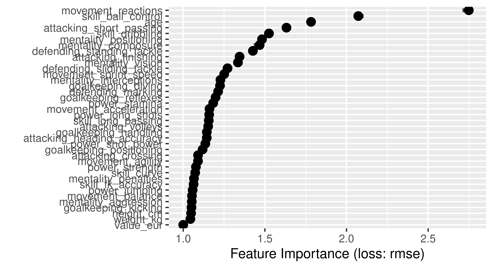
With DALEX
library(DALEX)
ranger_exp = DALEX::explain(learner,
data = fifa20,
y = fifa$value_eur,
label = "Fifa 2020",
verbose = FALSE)
ranger_effect = model_parts(ranger_exp, B = 5)
head(ranger_effect) variable mean_dropout_loss label
1 _full_model_ 1402526 Fifa 2020
2 value_eur 1402526 Fifa 2020
3 weight_kg 1471865 Fifa 2020
4 goalkeeping_kicking 1472795 Fifa 2020
5 height_cm 1474859 Fifa 2020
6 movement_balance 1475618 Fifa 2020plot(ranger_effect)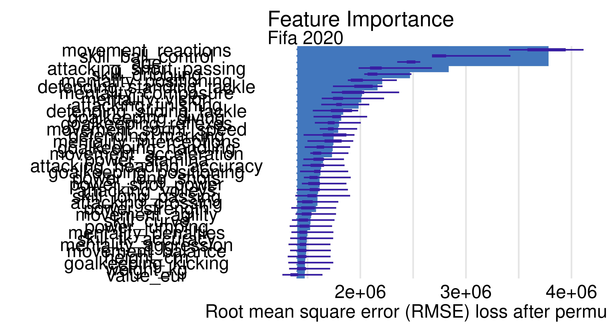
- Use the Partial Dependence profile to draw the global behavior of the model for this variable. Is it aligned with your expectations?
With iml
num_features = c("movement_reactions", "skill_ball_control", "age")
effect = FeatureEffects$new(model)
plot(effect, features = num_features)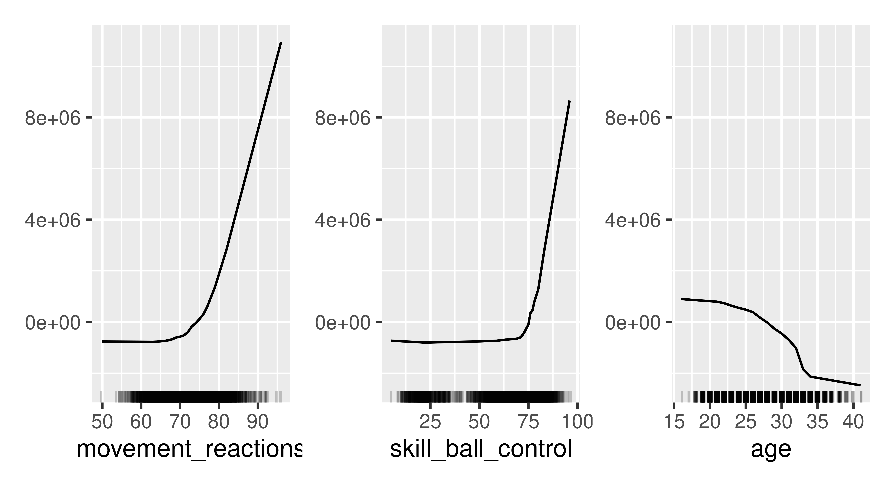
With DALEX
num_features = c("movement_reactions", "skill_ball_control", "age")
ranger_profiles = model_profile(ranger_exp, variables = num_features)
plot(ranger_profiles)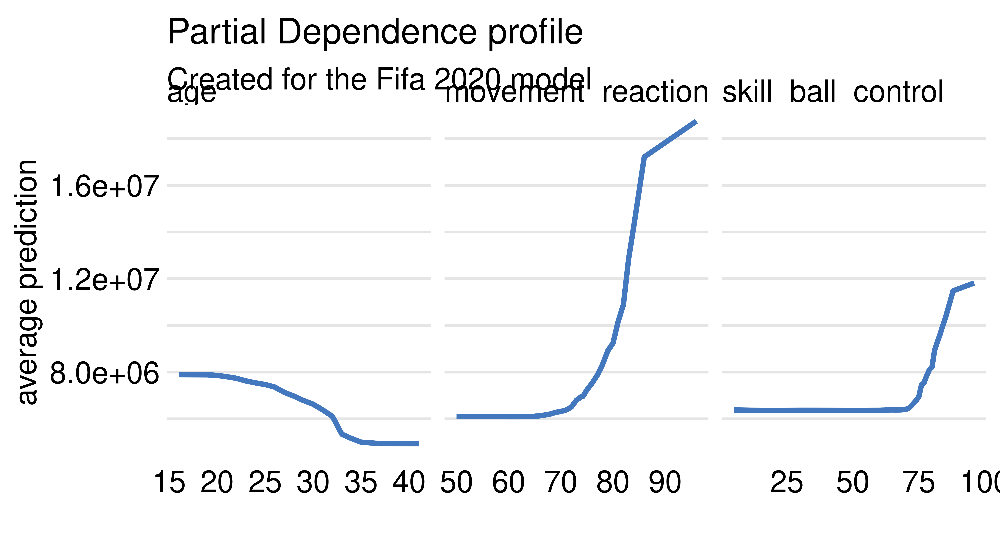
4 Choose one of the football players. You can choose some well-known striker (e.g. Robert Lewandowski) or a well-known goalkeeper (e.g. Manuel Neuer). The following tasks are worth repeating for several different choices.
player_1 = fifa["R. Lewandowski", 5:42]- For the selected footballer, calculate and plot the Shapley values. Which variable is locally the most important and has the strongest influence on the valuation of the footballer?
With iml
With DALEX
ranger_shap = predict_parts(ranger_exp,
new_observation = player_1,
type = "shap", B = 1)
plot(ranger_shap, show_boxplots = FALSE)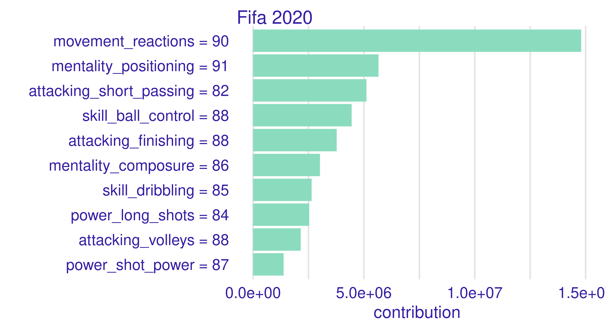
- For the selected footballer, calculate the Ceteris Paribus / Individual Conditional Expectation profiles to draw the local behavior of the model for this variable. Is it different from the global behavior?
With DALEX
num_features = c("movement_reactions", "skill_ball_control", "age")
ranger_ceteris = predict_profile(ranger_exp, player_1)
plot(ranger_ceteris, variables = num_features) +
ggtitle("Ceteris paribus for R. Lewandowski", " ")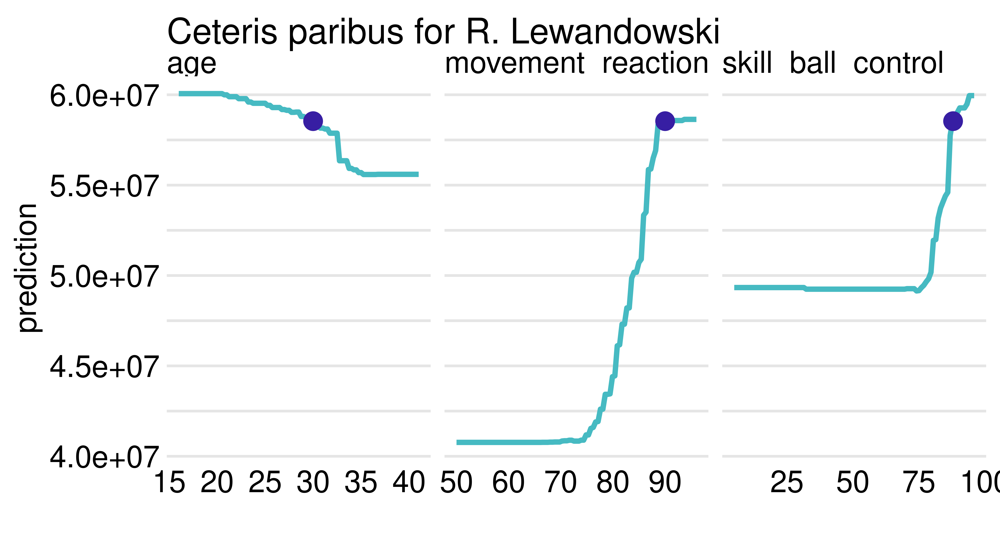
A.13 Solutions to Chapter 14
- Load the
adult_traintask and try to build a first model. Train a simple model and evaluate it on theadult_testtask that is also available withmlr3fairness.
For now we simply load the data and look at the data.
library(mlr3)
library(mlr3fairness)
set.seed(8)
tsk_adult_train = tsk("adult_train")
tsk_adult_test = tsk("adult_test")
tsk_adult_train<TaskClassif:adult_train> (30718 x 13)
* Target: target
* Properties: twoclass
* Features (12):
- fct (7): education, marital_status, occupation, race,
relationship, sex, workclass
- int (5): age, capital_gain, capital_loss, education_num,
hours_per_week
* Protected attribute: sexWe can now train a simple model, e.g., a decision tree and evaluate for accuracy.
learner = lrn("classif.rpart")
learner$train(tsk_adult_train)
prediction = learner$predict(tsk_adult_test)
prediction$score()classif.ce
0.161 - Assume our goal is to achieve parity in false omission rates. Construct a fairness metric that encodes this and againg evaluate your model. Construct a fairness metric that encodes this and evaluate your model. In order to get a deeper understanding, look at the
groupwise_metricsfunction to obtain performance in each group.
The metric is available via the key "fairness.fomr". Note, that evaluating our prediction now requires that we also provide the task.
msr_1 = msr("fairness.fomr")
prediction$score(msr_1, tsk_adult_test)fairness.fomr
0.03533 The groupwise_metrics function creates a metric for each group specified in the pta column role:
tsk_adult_test$col_roles$pta[1] "sex"msr_2 = groupwise_metrics(base_measure = msr("classif.fomr"), task = tsk_adult_test)We can then use this metric to evaluate our model again. This gives us the false omission rates for male and female individuals separately.
prediction$score(msr_2, tsk_adult_test) subgroup.fomr_Male subgroup.fomr_Female
0.2442 0.2089 - Improve your model by employing pipelines that use pre- or post-processing methods for fairness. Evaluate your model along the two metrics and visualize the results. Compare the different models using an appropriate visualization.
First we can again construct the learners above.
And run the benchmark again. Note, that we use three-fold CV this time for comparison.
learners = list(learner, lrn_1, lrn_2)
design = benchmark_grid(tsk_adult_train, learners, rsmp("cv", folds = 3L))
bmr = benchmark(design)
bmr$aggregate(msrs(c("classif.acc", "fairness.fomr"))) nr task_id learner_id resampling_id iters
1: 1 adult_train classif.rpart cv 3
2: 2 adult_train reweighing_wts.classif.rpart cv 3
3: 3 adult_train classif.rpart.EOd cv 3
2 variables not shown: [classif.acc, fairness.fomr]
Hidden columns: resample_resultWe can now again visualize the result.
library(ggplot2)
fairness_accuracy_tradeoff(bmr, msr("fairness.fomr")) +
scale_color_viridis_d("Learner") +
theme_minimal()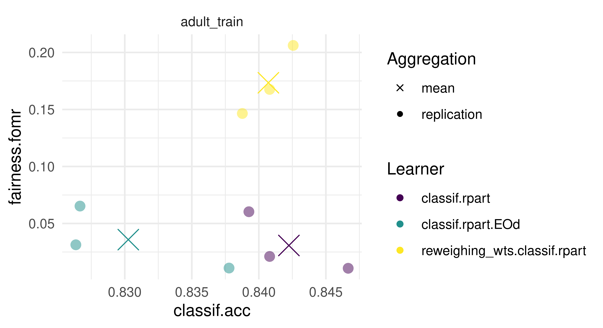
- Add
"race"as a second sensitive attribute to your dataset. Add the information to your task and evaluate the initial model again. What changes? Again study thegroupwise_metrics.
This can be achieved by adding “race” to the "pta" col_role.
tsk_adult_train$set_col_roles("race", add_to = "pta")
tsk_adult_train<TaskClassif:adult_train> (30718 x 13)
* Target: target
* Properties: twoclass
* Features (12):
- fct (7): education, marital_status, occupation, race,
relationship, sex, workclass
- int (5): age, capital_gain, capital_loss, education_num,
hours_per_week
* Protected attribute: sex, racetsk_adult_test$set_col_roles("race", add_to = "pta")
prediction$score(msr_1, tsk_adult_test)fairness.fomr
0.8889 If we now evaluate for the intersection, we obtain a large deviation from 0. Note, that the metric by default computes the maximum discrepancy between all metrics for the non-binary case.
If we now get the groupwise_metrics, we will get a metric for the intersection of each group.
msr_3 = groupwise_metrics(msr("classif.fomr"), tsk_adult_train)
unname(sapply(msr_3, function(x) x$id)) [1] "subgroup.fomr_Male, White"
[2] "subgroup.fomr_Male, Black"
[3] "subgroup.fomr_Female, Black"
[4] "subgroup.fomr_Female, White"
[5] "subgroup.fomr_Male, Asian-Pac-Islander"
[6] "subgroup.fomr_Male, Amer-Indian-Eskimo"
[7] "subgroup.fomr_Female, Other"
[8] "subgroup.fomr_Female, Asian-Pac-Islander"
[9] "subgroup.fomr_Female, Amer-Indian-Eskimo"
[10] "subgroup.fomr_Male, Other" prediction$score(msr_3, tsk_adult_test) subgroup.fomr_Male, White
0.2402
subgroup.fomr_Male, Black
0.2716
subgroup.fomr_Female, Black
0.2609
subgroup.fomr_Female, White
0.1919
subgroup.fomr_Male, Asian-Pac-Islander
0.3168
subgroup.fomr_Male, Amer-Indian-Eskimo
0.1667
subgroup.fomr_Female, Other
0.2500
subgroup.fomr_Female, Asian-Pac-Islander
0.3529
subgroup.fomr_Female, Amer-Indian-Eskimo
1.0000
subgroup.fomr_Male, Other
0.1111 And we can see, that the reason might be, that the false omission rate for female Amer-Indian-Eskimo is at 1.0! We can investigate this further by looking at actual counts:
, , target = <=50K
sex
race Female Male
Amer-Indian-Eskimo 56 74
Asian-Pac-Islander 131 186
Black 654 619
Other 37 66
White 3544 6176
, , target = >50K
sex
race Female Male
Amer-Indian-Eskimo 3 16
Asian-Pac-Islander 26 106
Black 41 133
Other 5 19
White 492 2931One of the reasons might be that there are only 3 individuals in the “>50k” category! This is an often encountered problem, as error metrics have a large variance when samples are small. Note, that the pre- and post-processing methods in general do not all support multiple protected attributes.